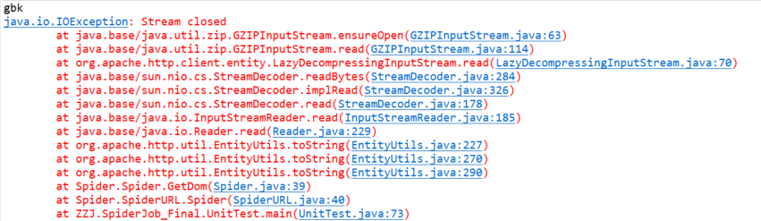
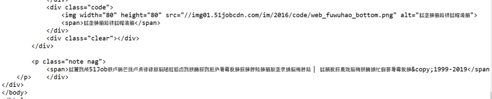
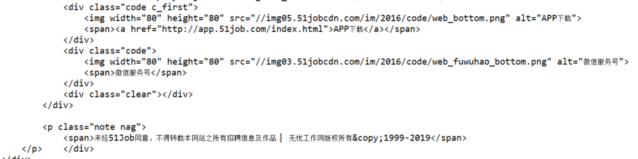
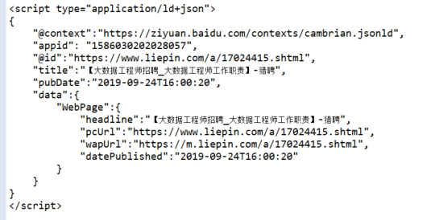

爬取51Job和猎聘网的信息，想处理字符集问题（51job为gbk，猎聘为utf-8），
找到两个网站字符集信息都在同一标签下
就想先把网页保存成String，解析一遍获取字符集，然后将网页转换成对应的正确的字符集，最后再转换成统一的字符集utf-8
1.0实现，2次调用Entity.Utils.toString方法
CloseableHttpResponse httpResponse = httpClient.execute(httpGet);
if(httpResponse.getStatusLine().getStatusCode() == 200) {
//网站转为String
String get_Charset_Entity2String = EntityUtils.toString(httpResponse.getEntity());
//解析
Document get_Charset_Document = Jsoup.parse(get_Charset_Entity2String);
//字符集信息提取，51job和猎聘
String charset = get_Charset_Document.select("meta[http-equiv=Content-Type]")
.attr("content").split("=")[1];
System.out.println(charset);
//根据字符集重新编码成正确的
String Ori_Entity = EntityUtils.toString(httpResponse.getEntity(),charset);
//转换为统一的utf-8
String entity = new String(Ori_Entity.getBytes(),"utf-8");
System.out.println(entity);
{
报错

参考 https://blog.csdn.net/qq_23145857/article/details/70213277
发现EntityUtils流只存在一次，但是有不想一个网页要连接两次，
这难不倒我，直接转换原来保留的String
2.0实现，第二次不使用EntityUtils
CloseableHttpResponse httpResponse = httpClient.execute(httpGet);
if(httpResponse.getStatusLine().getStatusCode() == 200) {
//网站转为String
String get_Charset_Entity2String = EntityUtils.toString(httpResponse.getEntity());
//解析
Document get_Charset_Document = Jsoup.parse(get_Charset_Entity2String);
//字符集信息提取，51job和猎聘
String charset = get_Charset_Document.select("meta[http-equiv=Content-Type]")
.attr("content").split("=")[1];
System.out.println(charset);
//根据字符集重新编码成正确的，不用EntityUtils，直接转get_Charset_Entity2String
String Ori_Entity = new String(get_Charset_Entity2String.getBytes(), charset);
//转换为统一的utf-8
String entity = new String(Ori_Entity.getBytes(),"utf-8");
System.out.println(entity);
{
输出：

字符集依旧有问题,发现不指定字符集，EntityUtils.toString()就用"ISO-8859-1"字符集,可我就是不知道字符集
看到参考链接下面的解决办法，眼前一亮，把流直接以位数组保存，都能灵活变换
3.0实现，不使用EntityUtils.toString，改用EntityUtils.toByteArray()
CloseableHttpResponse httpResponse = httpClient.execute(httpGet);
if(httpResponse.getStatusLine().getStatusCode() == 200) {
//网站转换为byte[]
byte[] bytes = EntityUtils.toByteArray(httpResponse.getEntity());
//byte列表转为默认字符集
String get_Charset_Entity2String = new String(bytes);
//解析
Document get_Charset_Document = Jsoup.parse(get_Charset_Entity2String);
//字符集信息提取，51job和猎聘
String charset = get_Charset_Document.select("meta[http-equiv=Content-Type]")
.attr("content").split("=")[1];
System.out.println(charset);
//根据字符集重新编码成正确的
String Ori_Entity = new String(bytes, charset);
//转换为统一的utf-8
String entity = new String(Ori_Entity.getBytes(), "utf-8");
System.out.println(entity);
}
对于里面的默认字符集
参考：https://blog.csdn.net/wangxin1949/article/details/78974037
输出正常

换成猎聘的url再尝试

完美，爬虫的字符集真神奇